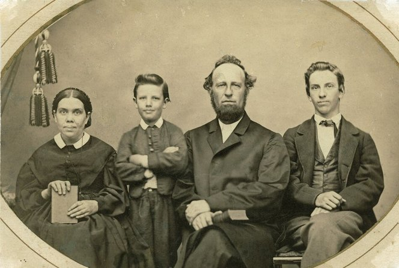

Sơ lược lịch sử hình thành Hệ Phái Cơ-Đốc Phục Lâm
Trần Đình Tâm
tamtran1561@yahoo.com
Hệ phái Cơ-đốc Phục Lâm được hình thành và phát triển bởi nhiều nhà giảng thuyết, nhưng quan trọng nhất là những nhân vật trụ cột sau: William Miller; Joseph Bates; Ellen G. White.
Xin ghi thật tóm tắt lịch sử hình thành hệ phái Cơ-đốc Phục Lâm:
Khởi điểm: William Miller (1782-1849)
Hội Cơ-đốc Phục Lâm (Seventh-Day Adventism) bắt nguồn từ nhà giảng thuyết tên William Miller. Sự giảng dạy của William Miller đặc biệt chú ý đến sự tái lâm (Adventist) của Chúa Jesus và được nhiều người hưởng ứng nên đã tạo ra phong trào Cơ-đốc Phục Lâm (Adventist movement) vào thời điểm đó.
William Miller căn cứ vào sách Đa-ni-ên 8:14-16 để tuyên bố Chúa Jesus tái lâm vào khoảng tháng 3, 1843 đến tháng 3, 1844. Sau khi thấy lời “tiên tri” của mình không đúng, ông lại quả quyết Chúa Jesus sẽ tái lâm vào ngày 22 tháng 10 năm 1844. Sự thất bại lần thứ hai trong lời dự đoán đã làm cho ông và những người theo CĐPL lúc ấy vô cùng thất vọng, một số đã rời bỏ cộng đồng. Tuy nhiên ngay sau đó, một thành viên trong hội là Hiram Edson đã cố gắng bào chữa cho sự sai lầm của William Miller và đã cứu vãn tình hình bằng cách tuyên bố ông có khải tượng từ Chúa cho thấy lời tiên tri của William Miller không đúng về ngày giờ Chúa tái lâm nhưng đúng theo một hướng khác: Chúa Jesus không tái lâm trên đất nhưng Chúa vào Nơi Chí Thánh của Đền Thờ ở trên trời để bắt đầu chức vụ làm Thầy Tế Lễ Thượng Phẩm của Ngài.
Hình thành tín lý: Joseph Bates (1792-1872)
Vào đầu năm 1845, một trong những thành viên của hội là Joseph Bates, ông đã giới thiệu giáo lý về ngày Sa-bát, và ông tin rằng Cơ-đốc nhân phải thờ phượng Chúa vào ngày Thứ Bảy là đúng với lẽ thật Thánh Kinh. Năm 1846, ông cho xuất bản tập khảo luận dài 48 trang, nội dung tập tài liệu đó là sự tóm tắt tín lý về việc giữ ngày Sa-bát Thứ Bảy.
Củng cố và phát triển: Ellen G. White (1827-1915)
Thời còn nhỏ, Ellen G. White và gia đình sinh hoạt trong Hội Thánh Giám Lý (Methodist). Lúc 12 tuổi, bà tiếp nhận Chúa Jesus trong một buổi nhóm của Hội Giám Lý tại thành phố Bruxton, thuộc tiểu bang Maine.
Trong khoảng năm 1840 đến 1842, Ellen G. White tham dự những buổi nhóm do William Miller giảng dạy và bà đã sớm trở thành một người sùng đạo và quyết định chuyển sang Hội Cơ-đốc Phục Lâm.
Năm 1846, Ellen kết hôn với James White, là một nhà giảng thuyết CĐPL. Cả hai vợ chồng bắt đầu nghiên cứu những tín lý do Joseph Bates giảng dạy, là người đã khởi xướng việc giữ ngày Sa-bát trước đó. Sau thời gian tìm hiểu, Ellen G. White và chồng hoàn toàn chấp nhận tín lý của Joseph Bates đề xướng và họ khởi sự vâng giữ ngày Sa-bát Thứ Bảy.
Sau đó không lâu, năm 1847, Ellen G. White cho biết bà đã nhìn thấy một khải tượng đặc biệt, chính khải tượng nầy đã giúp bà tự xác minh cho đức tin của bà là hoàn toàn đúng: Bà tuyên bố đã thấy Chúa Jesus mở hòm Giao Ước trong đền thờ trên trời và chỉ cho bà thấy Bảng Luật Pháp, trong đó Điều Răn Thứ tư (giữ ngày Sa-bát) được tỏa sáng bởi một vầng ánh sáng bao bọc. Kể từ khi thấy khải tượng đó, bà chính thức bắt đầu truyền bá giáo lý giữ ngày sa-bát. Ellen G. White cùng chồng du lịch đến Anh và nhiều nước khác để quảng bá tín lý của Hội Cơ-đốc Phục Lâm, đặc biệt giáo lý giữ ngày Sa-bát.
Bà là người được nhìn thấy rất nhiều khải tượng, bà tuyên bố đã nhận được khoảng 2.000 khải tượng trong suốt cuộc đời của bà. Ellen G. White được các tín đồ trong cộng đồng CĐPL kể là một nữ tiên tri của Chúa. Ellen G. White còn viết rất nhiều sách báo. Bà là người đem đến ảnh hưởng rất lớn trên đức tin của cộng đồng giáo dân qua việc xuất bản sách và các bài báo. Trong suốt 55 năm, bà viết 40 cuốn sách và rất niều bài báo gồm khoảng 5.000 đề mục (tổng cộng khoảng 10.000 trang)
Bà Ellen G. White cùng chồng và hai người con trai.
Nhận xét:
Hệ phái Cơ-đốc Phục Lâm mặc dù tuyên bố các tín lý đặt trên nền tảng Thánh Kinh, nhưng tín lý về ngày Sa-bát đã đi lệch ra khỏi lẽ thật Thánh Kinh và theo quan điểm của con người.
Tín lý giữ ngày Sa-bát hình thành từ thế kỷ thứ 18, điều nầy cho thấy Hội Thánh chân thật đầu tiên do các Sứ Đồ hướng dẫn đã không có giữ ngày Sa-bát.
Sau đó tín lý giữ ngày Sa-bát được củng cố và phát triển bởi khải tượng mà bà Ellen nhìn thấy về Điều Răn Thứ Tư. Có thể nói khải tượng về Điều Răn Thư Tư tỏa ánh hào quang giữa bảng 10 Điều Răn đã có tác dụng khiến cho người ta nghĩ rằng Điều Răn Thư Tư nổi trội hơn các điều răn khác, và chính lối tư duy đó đã hướng con người đến cách giải thích Kinh Thánh sao cho phù hợp với giáo lý giữ ngày Sa-bát.
Chúng ta biết sách Khải Huyền là mạc khải cuối cùng Chúa bày tỏ cho con người qua Kinh Thánh. Kinh Thánh là sự mạc khải đầy đủ và đã hoàn tất. Chúa không còn bày tỏ một giáo lý nào nữa ngoài Kinh Thánh. Như vậy, ngày nay ai là người dám cho rằng Chúa bày tỏ cho mình biết một tín lý mới qua chiêm bao hay khải tượng? Tại sao ngày nay còn có những người tin vào khải tượng của một người nào đó? Chúng ta có biết rằng nếu Lời Kinh Thánh dạy dỗ là đầy đủ và trọn vẹn thì Chúa không cần dạy thêm điều gì mới ngoài Kinh Thánh hay sao? Nếu như ngày nay cần phải có khải tượng thì điều nầy có nghĩa là Kinh Thánh thiếu sót hay sao? Quý vị hãy tự mình giải đáp các câu hỏi đó.
22 tháng 2, 2021